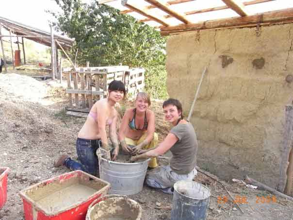

Projecten
Overig
Campo Carlo Tanja - 2009
Campo Carlo, Varzi, Praglasso IT-SCI 6.4
door Tanja Sikkens
Het was zondagochtend en ik ging vanuit Milaan met de trein om 9 uur ’s ochtend naar Volghera, een stadje of een dorpje ergens in de heuvels....toch? De trein verliet de grote stad, in het landschap aangekomen was ik enigszins verbaast over de vlakte. Waar waren de bergen, ik ging toch naar de bergen?
Op het station in Volghera ontmoette ik een aantal andere kampgenoten en de zogenaamde kampcoördinator. Met de auto werden Maaike (uit Amstelveen), ik en de bagage naar het kampterrein gereden. Na een half uur rijden kwamen we eindelijk in de heuvels waar ik zo naar verlangde. Nog eens twintig minuten hebben we door de heuvels geslingerd, om vervolgens aan te komen op de kamplocatie. Een warm welkom met heerlijk Italiaans biologisch eten en een warm gezelschap. Als één grote familie zaten we aan lange houten tafels, beschut tegen de zon, onder een rood gespannen zijl bij de buitenkeuken. Na eten en het opzetten van de tent hebben we ons met 6 mensen en veel instrumenten in een autootje weten te proppen om muziek te maken bij vrienden, heerlijk. Ik voelde me meteen deel uit maken van ‘de familie’.
’s Avonds was het kamp bijna compleet, wat een leuke mensen! We kregen instructies over de taken, het douchen en de werktijden. ’ s Ochtends om 8 uur beginnen bleek voor de meeste mensen toch wel zwaar, zeker wanneer de avond ervoor een kampvuur werd aangestoken. En tja, eigen schuld, dikke bult, als je later begint met werken, moet je langer doorwerken in de hitte. Met die hitte had ik wel problemen, maar op een gegeven moment raak je er toch wel aan gewend, met name aan de siësta’s. De eerste paar dagen wist ik niet zo goed wat ik nou tijdens de siësta moest doen. Ik ben namelijk van het soort dat slecht is in stilzitten. Uiteindelijk had ik mijn ‘ding’ gevonden; achter mijn tent, onder een notenboom was een redelijk vlak stukje grond, in de schaduw. Hier legde ik mijzelf iedere dag minstens een half uur neer, om te lezen of om muziek te luisteren, om wat slaap in te halen, om even alleen, of met de roodstaart die wel eens langs kwam huppen, te zijn. Het werk wat we deden was redelijk stoer, als in ‘ leuk maar zwaar’. Zo hebben we best wel wat heuvelachtig terrein vlak gemaakt, zodat er een speelplaats voor kinderen gemaakt kan worden en een amfi theater voor buiten toneel. Ook hebben we palen geslagen voor een omheining, om met name een schaap, dat Mercoledi (woensdag) heette, uit de groentetuin en weg van de stal van stro te houden. Om te voorkomen dat Mercoledi, maar ook andere beesten, insekten en knaagdieren, de stal verder op zouden eten hebben we de stroconstructie voorzien van een aantal lagen leem en paardenpoepstuuk. Wat een leuk werk was dat!

Naast het leuke werk waren er ook een aantal leuke excursies en een feest. Het feest is een jaarlijks terugkerend fenomeen; een soort eerbetoon aan Santa Cristina. Maar ik geloof dat het geloof hier niet zoveel mee te maken had, zoals feestdagen dat wel vaker hebben. Vanuit de gehele streek kwamen vrienden en kennissen met eten, drinken en muziekinstrumenten. Mijn kampgenootjes hebben me overgehaald een buikdans-act op te voeren, wat ik erg spannend vond, maar toch heb gedaan. Daarnaast heb ik vrolijk meegetoeterd op de jamsessie en daarmee weer een paar nieuwe muziekvrienden gemaakt.
“Daarnaast heb ik vrolijk meegetoeterd op de jamsessie en daarmee weer een paar nieuwe muziekvrienden gemaakt.”
Onze eerste excursie was naar een rivier de Trebbia, een vallei verderop, hier zochten we verkoeling in het water en gingen we barbecueën. Het schoolreisgehalte was hoog, iedereen stond te popelen om zichzelf in een auto te proppen en te gaan! Ik voelde me erg vrij en blij met deze groep lieve mensen en wilde overal wel met ze naar toe. Het bedenken van een tweede excursie ging ietwat moeizaam. Sommige mensen wilden naar de kust, maar dan weer niet als dat betekende dat ze drie uur moesten reizen, anderen wilden de bergen in, een paar koppige mensen wilden beide activiteiten op die ene dag doen...dat werd een lange discussie. Zelf was ik erg moe en vond de discussie erg vervelend, ik trok me terug en zou wel zien wat de plannen werden. De dag erna heb ik weer een poging gedaan om als gespreksleider te spelen. Op zo’n moment miste ik toch een kampcoördinator van de SCI. Eigenlijk hoort die er gedurende het hele kamp te zijn, maar die van ons was er maar soms.

Uiteindelijk deelde de groep zich voor de dag in tweeën: Het ene groepje ging de stad Pavia bekijken en de andere ging weer naar de rivier. ’s Avonds kwamen we weer samen om op de berg waar de paarden grazen te wandelen, in het gras te liggen en te picknicken. Zo kwam het toch weer helemaal goed en iedereen was blij. De laatste avond was het weer feest, een heerlijk buffet, kampvuur en dit keer dansmuziek uit een computer. Het werd een dansfeestje op de doodlopende straat aan het boerenerf. De twee dagen erna kwam het afscheid. Ik weet nooit zo goed hoe dat moet, mensen waren best emotioneel. En ik? Deze hele ervaring, het plattelandsleven, muziek maken, de gesprekken, was voor mij zeer inspirerend en ik ben weer verliefd geworden op het leven. Ik wenste iedereen het beste en bedankte een ieder voor deze ervaring en wenste ze een goede reis. Zelf ging ik overigens nog niet weg, ik bleef. Voor mij kwam het afscheid een week later, toen kwam bij mij het verdriet, deze plek en mensen te moeten missen. Misschien tot ziens, of zoals ze in Italiaans Engels zeggen: “Now, I Go.”